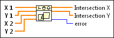

Convex Polygon Intersection VI
Owning Palette: Computational Geometry VIs
Requires: Full Development System
Computes the intersection of two convex polygons.
If two polygons do not intersect, the VI returns empty arrays to Intersection X and Intersection Y with no error.

 Add to the block diagram Add to the block diagram |
 Find on the palette Find on the palette |